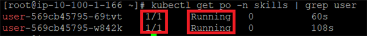

채점 유의사항
참고※ 다음 사항을 유의하여 채점하시오.
- AWS의 리전은 ap-northeast-2을 사용합니다.
- 웹페이지 접근은 크롬이나 파이어폭스를 이용합니다.
- 웹페이지에서 언어에 따라 문구가 다르게 보일 수 있습니다.
- Shell에서의 명령어의 출력은 버전에 따라 조금 다를 수 있습니다.
- 문제지와 채점지에 있는 <> 는 변수입니다. 해당 부분을 변경해 입력합니다.
- 채점은 문항 순서대로 진행해야 합니다.
- 삭제 채점은 되돌릴 수 없으므로 유의하여 진행합니다.
- 이의신청까지 완료 이후 선수가 생성한 클라우드 리소스를 삭제합니다.
- 부분 점수가 있는 문항은 채점 항목에 부분 점수가 적혀져 있습니다.
- 부분 점수가 따로 없는 문항은 전체 다 맞아야 점수로 인정됩니다.
- 채점 진행 전 환경 셋업을 위해 다음 사항을 확인해야 합니다.
- Bastion에 SSH로 접근할 수 있는지 확인합니다.
- Bastion에서 AWS CLI v2, cURL, jq, kubectl이 설치되어 있는지 확인합니다.
- Bastion에서 IAM Role이 매핑되어 AWS CLI로 AWS의 모든 리소스에 접근 가능한지 확인합니다.
- aws sts get-caller-identity 명령을 통해 선수의 계정이 아닌 다른 계정에 접근하고 있는지 확인합니다. 만약, 다른 계정이라면 부정행위를 의심할 수 있습니다.
- 채점 전 채점환경 구성을 위해 ~/.aws/config에 아래 내용이 추가되도록 합니다.
[default] region = ap-northeast-2 output = json - 채점 시에는 별도로 제공한 채점 스크립트(mark.sh)를 실행하여 채점할 수 있습니다. 다만, 선수가 직접 입력을 원할 경우 채점기준표에 명시된 명령어 그대로 입력하여 채점할 수 있습니다.
배점 요약
주요항목별 배점
| 번호 | 주요항목 | 배점 | 채점방법 | 채점시기 |
|---|---|---|---|---|
| 1 | Networking | 4.5 | 합의 | 경기 종료후 |
| 2 | Bastion Server | 3.0 | 합의 | 경기 종료후 |
| 3 | NoSQL Database | 12.0 | 합의 | 경기 종료후 |
| 4 | In-Memory Database | 13.5 | 합의 | 경기 종료후 |
| 5 | Image Repository | 6.0 | 합의 | 경기 종료후 |
| 6 | Container Orchestration | 6.0 | 합의 | 경기 종료후 |
| 7 | Load Balancing | 1.5 | 합의 | 경기 종료후 |
| 8 | Application | 4.5 | 합의 | 경기 종료후 |
| 9 | Logging | 3.0 | 합의 | 경기 종료후 |
| 10 | Auto Scaling | 6.0 | 합의 | 경기 종료후 |
| 합계 | 60 |
세부항목별 배점
| 번호 | 항목 | 배점 |
|---|---|---|
| 1-1 | Networking · VPC 확인 | 1.5 |
| 1-2 | Networking · Subnets 확인 | 1.5 |
| 1-3 | Networking · Route Tables 확인 | 1.5 |
| 2-1 | Bastion Server · 인스턴스 타입 확인 | 1.0 |
| 2-2 | Bastion Server · Public IP 확인 | 1.0 |
| 2-3 | Bastion Server · OS 확인 | 1.0 |
| 3-1 | NoSQL Database · DocumentDB Subnets 확인 | 1.5 |
| 3-2 | NoSQL Database · DocumentDB 고가용성 확인 | 1.5 |
| 3-3 | NoSQL Database · DocumentDB 암호화 확인 | 1.5 |
| 3-4 | NoSQL Database · DocumentDB 로깅 확인 | 1.5 |
| 3-5 | NoSQL Database · DocumentDB 백업 확인 | 1.5 |
| 3-6 | NoSQL Database · DocumentDB 포트 확인 | 1.5 |
| 3-7 | NoSQL Database · DocumentDB 버전 확인 | 1.5 |
| 3-8 | NoSQL Database · DocumentDB 인스턴스 타입 확인 | 1.5 |
| 4-1 | In-Memory Database · ElalstiCache Subnets 확인 | 1.5 |
| 4-2 | In-Memory Database · ElalstiCache Redis Cluster 확인 | 1.5 |
| 4-3 | In-Memory Database · ElastiCache 고가용성 확인 | 1.5 |
| 4-4 | In-Memory Database · ElastiCache 암호화 확인 | 1.5 |
| 4-5 | In-Memory Database · ElastiCache 로깅 확인 | 1.5 |
| 4-6 | In-Memory Database · ElastiCache 백업 확인 | 1.5 |
| 4-7 | In-Memory Database · ElastiCache 포트 확인 | 1.5 |
| 4-8 | In-Memory Database · ElastiCache 버전 확인 | 1.5 |
| 4-9 | In-Memory Database · ElastiCache 인스턴스 타입 확인 | 1.5 |
| 5-1 | Image Repository · ECR Repository 생성 확인 | 1.5 |
| 5-2 | Image Repository · ECR Repository 암호화 확인 | 1.5 |
| 5-3 | Image Repository · ECR Repository Scanning 확인 | 1.5 |
| 5-4 | Image Repository · ECR Repository Immutable 확인 | 1.5 |
| 6-1 | Container Orchestration · EKS Cluster 구성 확인 | 1.5 |
| 6-2 | Container Orchestration · EKS Addon Nodegroup 구성 확인 | 1.5 |
| 6-3 | Container Orchestration · EKS App Nodegroup 구성 확인 | 1.5 |
| 6-4 | Container Orchestration · EKS App Fargate Profile 구성 확인 | 1.5 |
| 7-1 | Load Balancing · ALB 구성 확인 | 1.5 |
| 8-1 | Application · user Pod 구성 확인 | 1.5 |
| 8-2 | Application · token Pod 구성 확인 | 1.5 |
| 8-3 | Application · Application 동작 확인 | 1.5 |
| 9-1 | Logging · user 애플리케이션 로깅 확인 | 1.5 |
| 9-2 | Logging · token 애플리케이션 로깅 확인 | 1.5 |
| 10-1 | Auto Scaling · user Scaling Out | 1.5 |
| 10-2 | Auto Scaling · user Scaling In | 1.5 |
| 10-3 | Auto Scaling · token Scaling Out | 1.5 |
| 10-4 | Auto Scaling · token Scaling In | 1.5 |
| 총점 | 60 |
채점 항목
1-1. VPC 확인 · 1.5점
채점 방법
- SSH를 통해 Bastion 서버에 접근합니다.
- 아래 명령어를 입력합니다.
aws ec2 describe-vpcs --filter Name=tag:Name,Values=skills-vpc \ --query "Vpcs[].CidrBlock" - 10.100.0.0/16이 출력되는지 확인합니다.
1-2. Subnets 확인 · 1.5점
채점 방법
- SSH를 통해 Bastion 서버에 접근합니다.
- 아래 명령어를 입력합니다.
aws ec2 describe-subnets --filter Name=tag:Name,Values=skills-public-subnet-a \ --query "Subnets[].[AvailabilityZone, CidrBlock][]" - ap-northeast-2a와 10.100.1.0/24가 출력되는지 확인합니다.
- 아래 명령어를 입력합니다.
aws ec2 describe-subnets --filter Name=tag:Name,Values=skills-public-subnet-b \ --query "Subnets[].[AvailabilityZone, CidrBlock][]" - ap-northeast-2b와 10.100.2.0/24가 출력되는지 확인합니다.
- 아래 명령어를 입력합니다.
aws ec2 describe-subnets --filter Name=tag:Name,Values=skills-private-subnet-a \ --query "Subnets[].[AvailabilityZone, CidrBlock][]" - ap-northeast-2a와 10.100.11.0/24가 출력되는지 확인합니다.
- 아래 명령어를 입력합니다.
aws ec2 describe-subnets --filter Name=tag:Name,Values=skills-private-subnet-b \ --query "Subnets[].[AvailabilityZone, CidrBlock][]" - ap-northeast-2b와 10.100.12.0/24가 출력되는지 확인합니다.
- 아래 명령어를 입력합니다.
aws ec2 describe-subnets --filter Name=tag:Name,Values=skills-protected-subnet-a \ --query "Subnets[].[AvailabilityZone, CidrBlock][]" - ap-northeast-2a와 10.100.21.0/24가 출력되는지 확인합니다.
- 아래 명령어를 입력합니다.
aws ec2 describe-subnets --filter Name=tag:Name,Values=skills-protected-subnet-b \ --query "Subnets[].[AvailabilityZone, CidrBlock][]" - ap-northeast-2b와 10.100.22.0/24가 출력되는지 확인합니다.
1-3. Route Tables 확인 · 1.5점
채점 방법
- SSH를 통해 Bastion 서버에 접근합니다.
- 아래 명령어를 입력합니다.
aws ec2 describe-route-tables --filter Name=tag:Name,Values=skills-public-rtb \ --query "RouteTables[].Routes[].GatewayId" - igw- 로 시작하는 문구가 출력되는지 확인합니다.
- 아래 명령어를 입력합니다.
aws ec2 describe-internet-gateways --filter Name=tag:Name,Values=skills-igw \ --query "InternetGateways[].InternetGatewayId" - igw- 로 시작하는 문구가 2)에서 출력된 문구와 동일한지 확인합니다. 0.5점.
- 아래 명령어를 입력합니다.
aws ec2 describe-route-tables --filter Name=tag:Name,Values=skills-private-rtb-a \ --query "RouteTables[].Routes[].NatGatewayId" - nat- 로 시작하는 문구가 출력되는지 확인합니다.
- 아래 명령어를 입력합니다.
aws ec2 describe-nat-gateways --filter Name=tag:Name,Values=skills-nat-a \ --query "NatGateways[].NatGatewayId" - nat- 로 시작하는 문구가 6)에서 출력된 문구와 동일한지 확인합니다.
- 아래 명령어를 입력합니다.
aws ec2 describe-route-tables --filter Name=tag:Name,Values=skills-private-rtb-b \ --query "RouteTables[].Routes[].NatGatewayId" - nat- 로 시작하는 문구가 출력되는지 확인합니다.
- 아래 명령어를 입력합니다.
aws ec2 describe-nat-gateways --filter Name=tag:Name,Values=skills-nat-b \ --query "NatGateways[].NatGatewayId" - nat- 로 시작하는 문구가 10)에서 출력된 문구와 동일한지 확인합니다. 0.5점.
- 아래 명령어를 입력합니다.
aws ec2 describe-route-tables --filter Name=tag:Name,Values=skills-protected-rtb \ --query "RouteTables[0].Routes[*].DestinationCidrBlock" - 10.100.0.0/16만 출력되는지 확인합니다. 0.5점.
2-1. 인스턴스 타입 확인 · 1.0점
채점 방법
- SSH를 통해 Bastion 서버에 접근합니다.
- 아래 명령어를 입력합니다.
aws ec2 describe-instances --filter Name=tag:Name,Values=skills-bastion-ec2 \ --query "Reservations[].Instances[].InstanceType" - t4g.small이 출력되는지 확인합니다.
2-2. Public IP 확인 · 1.0점
채점 방법
- SSH를 통해 Bastion 서버에 접근합니다.
- 아래 명령어를 입력합니다.
aws ec2 describe-instances --filter Name=tag:Name,Values=skills-bastion-ec2 \ --query "Reservations[].Instances[].PublicIpAddress" - 2)에서 출력된 IP를 기록합니다.
- 아래 명령어를 입력합니다.
aws ec2 describe-addresses --query "Addresses[].PublicIp" - 출력되는 IP 리스트 중에 3)에서 기록한 IP가 존재하는지 확인합니다.
2-3. OS 확인 · 1.0점
채점 방법
- SSH를 통해 Bastion 서버에 접근합니다.
- 아래 명령어를 입력합니다.
aws ec2 describe-instances --filter Name=tag:Name,Values=skills-bastion-ec2 \ --query "Reservations[].Instances[].ImageId" - ami-로 시작하는 AMI ID를 기록합니다.
- 아래 명령어를 입력합니다.
aws ec2 describe-images --image-ids <2)에서 기록한 AMI ID> --query "Images[].Description" - Amazon Linux 2023이 포함된 문구가 출력되는지 확인합니다.
3-1. DocumentDB Subnets 확인 · 1.5점
채점 방법
- SSH를 통해 Bastion 서버에 접근합니다.
- 아래 명령어를 입력합니다.
aws docdb describe-db-clusters --db-cluster-identifier skills-mongodb-cluster \ --query "DBClusters[].DBSubnetGroup" - 명령어를 실행했을 때 출력되는 문구를 기록합니다.
- 아래 명령어를 입력합니다.
aws docdb describe-db-subnet-groups --db-subnet-group-name <3)에서 기록한 문구> \ --query "DBSubnetGroups[].Subnets[].SubnetIdentifier" - subnet-으로 시작하는 문구가 2개만 출력되는지 확인합니다.
- 아래 명령어를 입력합니다.
aws ec2 describe-subnets \ --subnet-ids <3에서 출력된 문구의 첫번째> <3에서 출력된 문구의 두번째> \ --query "Subnets[].CidrBlock" - 10.100.21.0과 10.100.22.0 2개만 출력되는지 확인합니다. 하나라도 다르면 오답입니다.
3-2. DocumentDB 고가용성 확인 · 1.5점
채점 방법
- SSH를 통해 Bastion 서버에 접근합니다.
- 아래 명령어를 입력합니다.
aws docdb describe-db-clusters --db-cluster-identifier skills-mongodb-cluster \ --query "DBClusters[].MultiAZ" - true가 출력되는지 확인합니다.
3-3. DocumentDB 암호화 확인 · 1.5점
채점 방법
- SSH를 통해 Bastion 서버에 접근합니다.
- 아래 명령어를 입력합니다.
aws docdb describe-db-clusters --db-cluster-identifier skills-mongodb-cluster \ --query "DBClusters[].StorageEncrypted" - true가 출력되는지 확인합니다.
3-4. DocumentDB 로깅 확인 · 1.5점
채점 방법
- SSH를 통해 Bastion 서버에 접근합니다.
- 아래 명령어를 입력합니다.
aws docdb describe-db-clusters --db-cluster-identifier skills-mongodb-cluster \ --query "DBClusters[].EnabledCloudwatchLogsExports" - audit과 profiler 2개가 출력되는지 확인합니다.
3-5. DocumentDB 백업 확인 · 1.5점
채점 방법
- SSH를 통해 Bastion 서버에 접근합니다.
- 아래 명령어를 입력합니다.
aws docdb describe-db-clusters --db-cluster-identifier skills-mongodb-cluster \ --query "DBClusters[].BackupRetentionPeriod" - 0이 출력되지 않는지(1 이상인지) 확인합니다.
3-6. DocumentDB 포트 확인 · 1.5점
채점 방법
- SSH를 통해 Bastion 서버에 접근합니다.
- 아래 명령어를 입력합니다.
aws docdb describe-db-clusters --db-cluster-identifier skills-mongodb-cluster \ --query "DBClusters[].Port" - 27015가 아닌 다른 포트가 출력되는지 확인합니다. 0.3점.
3-7. DocumentDB 버전 확인 · 1.5점
채점 방법
- SSH를 통해 Bastion 서버에 접근합니다.
- 아래 명령어를 입력합니다.
aws docdb describe-db-clusters --db-cluster-identifier skills-mongodb-cluster \ --query "DBClusters[].EngineVersion" - 5.0.0이 출력되는지 확인합니다.
3-8. DocumentDB 인스턴스 타입 확인 · 1.5점
채점 방법
- SSH를 통해 Bastion 서버에 접근합니다.
- 아래 명령어를 입력합니다.
aws docdb describe-db-clusters --db-cluster-identifier skills-mongodb-cluster \ --query "DBClusters[].DBClusterMembers[0].DBInstanceIdentifier" - skills-mongodb-cluster로 시작하는 문구를 기록합니다.
- 아래 명령어를 입력합니다.
aws docdb describe-db-instances --db-instance-identifier <3에서 기록한 문구> \ --query "DBInstances[].DBInstanceClass" - db.t4g.medium이 출력되는지 확인합니다.
4-1. ElalstiCache Subnets 확인 · 1.5점
채점 방법
- SSH를 통해 Bastion 서버에 접근합니다.
- 아래 명령어를 입력합니다.
aws elasticache describe-replication-groups --replication-group-id skills-redis-cluster \ --query "ReplicationGroups[].NodeGroups[0].NodeGroupMembers[0].CacheClusterId" - 명령어를 실행했을 때 출력되는 문구를 기록합니다.
- 아래 명령어를 입력합니다.
aws elasticache describe-cache-clusters --cache-cluster-id <2)에서 기록한 문구> \ --query "CacheClusters[].CacheSubnetGroupName" - 명령어를 실행했을 때 출력되는 문구를 기록합니다.
- 아래 명령어를 입력합니다.
aws elasticache describe-cache-subnet-groups --cache-subnet-group-name <3)에서 기록한 문구> \ --query "CacheSubnetGroups[].Subnets[].SubnetIdentifier" - subnet-으로 시작하는 문구가 2개만 출력되는지 확인합니다.
- 아래 명령어를 입력합니다.
aws ec2 describe-subnets \ --subnet-ids <3에서 출력된 문구의 첫번째> <3에서 출력된 문구의 두번째> \ --query "Subnets[].CidrBlock" - 10.100.21.0과 10.100.22.0 2개만 출력되는지 확인합니다. 하나라도 다르면 오답입니다.
4-2. ElalstiCache Redis Cluster 확인 · 1.5점
채점 방법
- SSH를 통해 Bastion 서버에 접근합니다.
- 아래 명령어를 입력합니다.
aws elasticache describe-replication-groups --replication-group-id skills-redis-cluster \ --query "ReplicationGroups[].ClusterEnabled" - true가 출력되는지 확인합니다.
4-3. ElastiCache 고가용성 확인 · 1.5점
채점 방법
- SSH를 통해 Bastion 서버에 접근합니다.
- 아래 명령어를 입력합니다.
aws elasticache describe-replication-groups --replication-group-id skills-redis-cluster \ --query "ReplicationGroups[].AutomaticFailover" - enabled가 출력되는지 확인합니다. 0.7점.
- 아래 명령어를 입력합니다.
aws elasticache describe-replication-groups --replication-group-id skills-redis-cluster \ --query "ReplicationGroups[].MultiAZ" - enabled가 출력되는지 확인합니다. 0.8점.
4-4. ElastiCache 암호화 확인 · 1.5점
채점 방법
- SSH를 통해 Bastion 서버에 접근합니다.
- 아래 명령어를 입력합니다.
aws elasticache describe-replication-groups --replication-group-id skills-redis-cluster \ --query "ReplicationGroups[].AtRestEncryptionEnabled" - true가 출력되는지 확인합니다. 0.8점.
- 아래 명령어를 입력합니다.
aws elasticache describe-replication-groups --replication-group-id skills-redis-cluster \ --query "ReplicationGroups[].TransitEncryptionEnabled" - true가 출력되는지 확인합니다. 0.7점.
4-5. ElastiCache 로깅 확인 · 1.5점
채점 방법
- SSH를 통해 Bastion 서버에 접근합니다.
- 아래 명령어를 입력합니다.
aws elasticache describe-replication-groups --replication-group-id skills-redis-cluster \ --query "ReplicationGroups[].LogDeliveryConfigurations[].Status" - active가 2개가 출력되는지 확인합니다.
4-6. ElastiCache 백업 확인 · 1.5점
채점 방법
- SSH를 통해 Bastion 서버에 접근합니다.
- 아래 명령어를 입력합니다.
aws elasticache describe-replication-groups --replication-group-id skills-redis-cluster \ --query "ReplicationGroups[].SnapshotRetentionLimit" - 0이 출력되지 않는지(1 이상인지) 확인합니다.
4-7. ElastiCache 포트 확인 · 1.5점
채점 방법
- SSH를 통해 Bastion 서버에 접근합니다.
- 아래 명령어를 입력합니다.
aws elasticache describe-replication-groups --replication-group-id skills-redis-cluster \ --query "ReplicationGroups[].ConfigurationEndpoint.Port" - 6379가 아닌 다른 포트가 출력되는지 확인합니다.
4-8. ElastiCache 버전 확인 · 1.5점
채점 방법
- SSH를 통해 Bastion 서버에 접근합니다.
- 아래 명령어를 입력합니다.
aws elasticache describe-replication-groups --replication-group-id skills-redis-cluster \ --query "ReplicationGroups[].NodeGroups[0].NodeGroupMembers[0].CacheClusterId" - skills-redis-cluster-로 시작하는 문구를 기록합니다.
- 아래 명령어를 입력합니다.
aws elasticache describe-cache-clusters --cache-cluster-id <3)에서 기록한 문구> \ --query "CacheClusters[].EngineVersion" - 7.0으로 시작하는 문구가 출력되는지 확인합니다.
4-9. ElastiCache 인스턴스 타입 확인 · 1.5점
채점 방법
- SSH를 통해 Bastion 서버에 접근합니다.
- 아래 명령어를 입력합니다.
aws elasticache describe-replication-groups --replication-group-id skills-redis-cluster \ --query "ReplicationGroups[].CacheNodeType" - cache.t4g.small이 출력되는지 확인합니다.
5-1. ECR Repository 생성 확인 · 1.5점
채점 방법
- SSH를 통해 Bastion 서버에 접근합니다.
- 아래 명령어를 입력합니다.
aws ecr describe-repositories --repository-names user token \ --query "repositories[].repositoryName" - user와 token이 출력되는지 확인합니다. 각각 0.75점.
5-2. ECR Repository 암호화 확인 · 1.5점
채점 방법
- SSH를 통해 Bastion 서버에 접근합니다.
- 아래 명령어를 입력합니다.
aws ecr describe-repositories --repository-names user token \ --query "repositories[].encryptionConfiguration[].encryptionType" - KMS가 출력되는지 확인합니다. 1개당 0.75점.
5-3. ECR Repository Scanning 확인 · 1.5점
채점 방법
- SSH를 통해 Bastion 서버에 접근합니다.
- 아래 명령어를 입력합니다.
aws ecr describe-repositories --repository-names user token \ --query "repositories[].imageScanningConfiguration.scanOnPush" - true가 출력되는지 확인합니다. 1개당 0.75점.
5-4. ECR Repository Immutable 확인 · 1.5점
채점 방법
- SSH를 통해 Bastion 서버에 접근합니다.
- 아래 명령어를 입력합니다.
aws ecr describe-repositories --repository-names user token \ --query "repositories[].imageTagMutability" - IMMUTABLE이 출력되는지 확인합니다. 1개당 0.75점.
6-1. EKS Cluster 구성 확인 · 1.5점
채점 방법
- SSH를 통해 Bastion 서버에 접근합니다.
- 아래 명령어를 입력합니다.
aws eks describe-cluster --name skills-eks-cluster --query "cluster.logging.clusterLogging" - api, audit, authenticator, controllerManager, scheduler이 출력되는지 확인합니다. 각각 0.1점.
- 아래 명령어를 입력합니다.
aws eks describe-cluster --name skills-eks-cluster \ --query "cluster.encryptionConfig[].provider.keyArn" - arn:aws:kms로 시작하는 문구가 출력되는지 확인합니다. 0.5점.
- 아래 명령어를 입력합니다.
aws eks describe-cluster --name skills-eks-cluster \ --query "cluster.resourcesVpcConfig.[endpointPublicAccess, endpointPrivateAccess]" - false, true가 순서대로 출력되는지 확인합니다. 0.5점.
6-2. EKS Addon Nodegroup 구성 확인 · 1.5점
채점 방법
- SSH를 통해 Bastion 서버에 접근합니다.
- 아래 명령어를 입력합니다.
aws eks describe-nodegroup --cluster-name skills-eks-cluster \ --nodegroup-name skills-eks-addon-nodegroup --query "nodegroup.nodegroupName" - skills-eks-addon-nodegroup이 출력되는지 확인합니다. 0.5점.
- 아래 명령어를 입력합니다.
kubectl get no -l "eks.amazonaws.com/nodegroup=skills-eks-addon-nodegroup" --output json \ | jq ".items[].metadata.labels | .\"eks.amazonaws.com/nodegroup\" + \" \" + .\"topology.kubernetes.io/zone\"" - skills-eks-addon-nodegroup ap-northeast-2a와 skills-eks-addon-nodegroup ap-northeast-2b가 각각 1개 이상 출력되는지 확인합니다. 0.5점.
- 아래 명령어를 입력합니다.
kubectl get no -l "eks.amazonaws.com/nodegroup=skills-eks-addon-nodegroup" --output json \ | jq ".items[].metadata.labels.\"node.kubernetes.io/instance-type\"" - t4g.large가 2개 이상 출력되는지 확인합니다. 0.5점.
6-3. EKS App Nodegroup 구성 확인 · 1.5점
채점 방법
- SSH를 통해 Bastion 서버에 접근합니다.
- 아래 명령어를 입력합니다.
aws eks describe-nodegroup --cluster-name skills-eks-cluster \ --nodegroup-name skills-eks-app-nodegroup --query "nodegroup.nodegroupName" - skills-eks-addon-nodegroup이 출력되는지 확인합니다. 0.5점.
- 아래 명령어를 입력합니다.
kubectl get no -l "eks.amazonaws.com/nodegroup=skills-eks-app-nodegroup" --output json \ | jq ".items[].metadata.labels | .\"eks.amazonaws.com/nodegroup\" + \" \" + .\"topology.kubernetes.io/zone\"" - skills-eks-app-nodegroup ap-northeast-2a와 skills-eks-app-nodegroup ap-northeast-2b가 각각 1개 이상 출력되는지 확인합니다. 0.5점.
- 아래 명령어를 입력합니다.
kubectl get no -l "eks.amazonaws.com/nodegroup=skills-eks-app-nodegroup" --output json \ | jq ".items[].metadata.labels.\"node.kubernetes.io/instance-type\"" - m6g.large가 2개 이상 출력되는지 확인합니다. 0.5점.
6-4. EKS App Fargate Profile 구성 확인 · 1.5점
채점 방법
- SSH를 통해 Bastion 서버에 접근합니다.
- 아래 명령어를 입력합니다.
aws eks describe-fargate-profile --cluster-name skills-eks-cluster \ --fargate-profile-name skills-eks-app-profile \ --query "fargateProfile.fargateProfileName" - skills-eks-app-profile이 출력되는지 확인합니다.
7-1. ALB 구성 확인 · 1.5점
채점 방법
- SSH를 통해 Bastion 서버에 접근합니다.
- 아래 명령어를 입력합니다.
aws elbv2 describe-load-balancers --names skills-user-alb \ --query "LoadBalancers[].Scheme" - internet-facing이 출력되는지 확인합니다.
8-1. user Pod 구성 확인 · 1.5점
채점 방법
- SSH를 통해 Bastion 서버에 접근합니다.
- 아래 명령어를 입력합니다.
kubectl get pod -n skills | grep user
- user Pod가 2개 이상 출력되고, 모두 (숫자1)/(숫자2) Running 상태인지 확인합니다. (숫자1)과 (숫자2)는 0이 아니면서 서로 동일해야 합니다. 위의 그림을 참고합니다. 0.7점.
- 아래 명령어를 입력합니다.
kubectl get pod -n skills -o json | jq '.items[]' \ | jq 'select(.metadata.name | startswith("user"))' \ | jq -r '.spec.nodeName' | head -n 1 - ip-로 시작하는 문구를 기록합니다.
- 아래 명령어를 입력합니다.
kubectl get node <5)에서 기록한 node id> -o json \ | jq -r '.metadata.labels."eks.amazonaws.com/nodegroup"' - skills-eks-app-nodegroup가 출력되는지 확인합니다. 0.8점
8-2. token Pod 구성 확인 · 1.5점
채점 방법
- SSH를 통해 Bastion 서버에 접근합니다.
- 아래 명령어를 입력합니다.
kubectl get pod -n skills | grep token
- token Pod가 2개 이상 출력되고, 모두 (숫자1)/(숫자2) Running 상태인지 확인합니다. (숫자1)과 (숫자2)는 0이 아니면서 서로 동일해야 합니다. 위의 그림을 참고합니다. 0.7점.
- 아래 명령어를 입력합니다.
kubectl get pod -n skills -o json | jq '.items[]' \ | jq 'select(.metadata.name | startswith("token"))' \ | jq -r '.spec.nodeName' | head -n 1 - fargate-ip-로 시작하는 문구를 기록합니다.
- 아래 명령어를 입력합니다.
kubectl get pod -n skills -o json \ | jq '.items[]' | jq 'select(.metadata.name | startswith("token"))' \ | jq -r '.metadata.annotations.CapacityProvisioned' | head -n 1 - 0.5vCPU 1GB가 출력되는지 확인합니다. 0.8점
8-3. Application 동작 확인 · 1.5점
채점 방법
- SSH를 통해 Bastion 서버에 접근합니다.
- 아래 명령어를 입력합니다.
aws elbv2 describe-load-balancers --names skills-user-alb \ --query "LoadBalancers[].DNSName" - skills-user-alb-로 시작하는 도메인을 기록합니다.
- 아래 명령어를 입력합니다.
curl http://<3)에서 기록한 도메인)>/api/v1/user \ -X POST -H 'Content-Type: application/json' \ -d '{"id": "test9999", "name": "test9999", "password": "test9999"}' - token값이 출력되는지 확인합니다. 해당 token값을 기록합니다. 0.7점.
- 아래 명령어를 입력합니다.
curl http://<3)에서 기록한 도메인)>/api/v1/user?token=<5)에서 기록한 token값> - token is valid라는 문구가 출력되는지 확인합니다. 0.8점.
9-1. user 애플리케이션 로깅 확인 · 1.5점
채점 방법
- SSH를 통해 Bastion 서버에 접근합니다.
- 아래 명령어를 입력합니다.
aws logs tail /aws/app/user | tail -n 1 - 로깅 시간이 현재 시간과 유사한지 확인합니다. 오차는 1분 이내까지 허용합니다. 시간대가 UTC이므로 +9를 더해서 계산해야 합니다.
9-2. token 애플리케이션 로깅 확인 · 1.5점
채점 방법
- SSH를 통해 Bastion 서버에 접근합니다.
- 아래 명령어를 입력합니다.
aws logs tail /aws/app/token | tail -n 1 - 로깅 시간이 현재 시간과 유사한지 확인합니다. 오차는 1분 이내까지 허용합니다. 시간대가 UTC이므로 +9를 더해서 계산해야 합니다.
10-1. user Scaling Out · 1.5점
채점 방법
- SSH를 통해 Bastion 서버에 접근합니다.
- 아래 명령어를 입력합니다. (Bastion 서버에 채점 스크립트를 저장한 후 실행합니다.)
chmod 755./load-token.sh ./load-user.sh - 위 스크립트를 5분간 실행한 후, 종료합니다.
- 아래 명령어를 입력합니다.
kubectl get pod -n skills | grep user - user Pod가 최소 3개 이상 출력되는지 확인합니다.
- 아래 명령어를 입력합니다.
kubectl get node -o json | jq '.items[].metadata.labels' \ | jq -c 'select(."eks.amazonaws.com/nodegroup" == "skills-eks-app-nodegroup")' | wc -l - 3 이상 출력되는지 확인합니다.
10-2. user Scaling In · 1.5점
채점 방법
- SSH를 통해 Bastion 서버에 접근합니다.
- 아래 명령어를 입력합니다.
kubectl get pod -n skills | grep user - user Pod가 2개만 출력되는지 확인합니다. 최대 20분까지 기다릴 수 있습니다.
- 아래 명령어를 입력합니다.
kubectl get node -o json | jq '.items[].metadata.labels' \ | jq -c 'select(."eks.amazonaws.com/nodegroup" == "skills-eks-app-nodegroup")' | wc -l - 2가 출력되는지 확인합니다. 최대 20분까지 기다릴 수 있습니다.
10-3. token Scaling Out · 1.5점
채점 방법
- SSH를 통해 Bastion 서버에 접근합니다.
- 아래 명령어를 입력합니다. (Bastion 서버에 채점 스크립트를 저장한 후 실행합니다.)
chmod 755./load-token.sh ./load-token.sh - 위 스크립트를 5분간 실행한 후, 종료합니다.
- 아래 명령어를 입력합니다.
kubectl get pod -n skills | grep token - token Pod가 최소 3개 이상 출력되는지 확인합니다.
10-4. token Scaling In · 1.5점
채점 방법
- SSH를 통해 Bastion 서버에 접근합니다.
- 아래 명령어를 입력합니다.
kubectl get pod -n skills | grep token - token Pod가 2개만 출력되는지 확인합니다. 최대 20분까지 기다릴 수 있습니다.